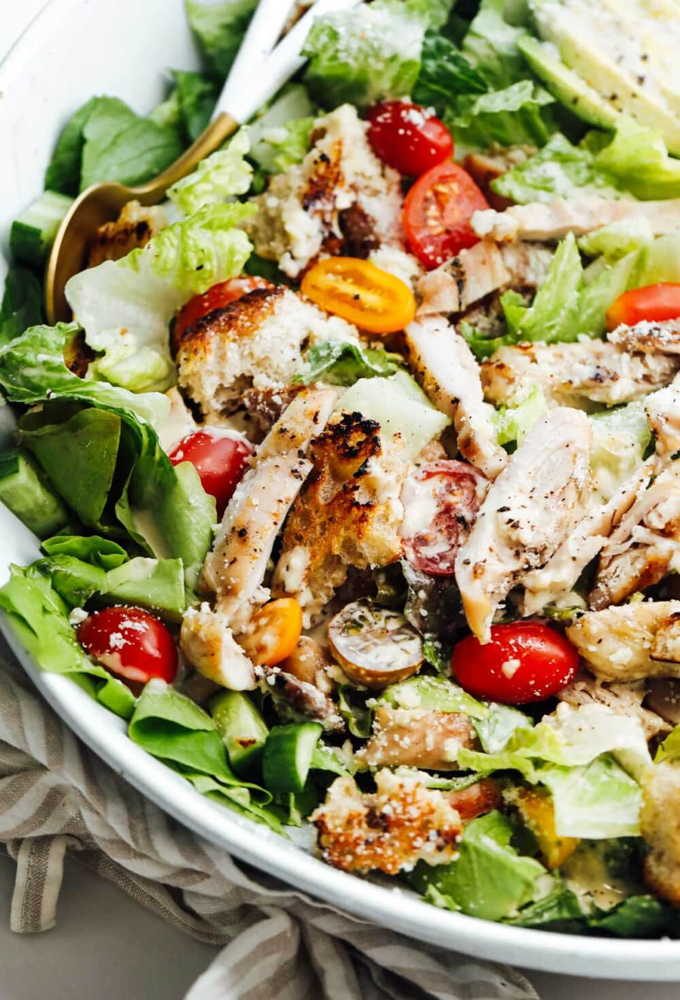

Crisp romaine, grilled chicken, parmesan, and homemade Caesar dressing

Prep Time
20 minutes
Cook Time
15 minutes
Servings
4 people
Difficulty
Medium
Ingredients
2 boneless, skinless chicken breasts
2 heads romaine lettuce, chopped
1/2 cup grated Parmesan cheese
1/2 cup croutons (homemade or store-bought)
2 tablespoons olive oil
Salt and pepper to taste
For Caesar Dressing:
1/4 cup mayonnaise
2 tablespoons lemon juice
2 tablespoons grated Parmesan cheese
2 cloves garlic, minced
1 teaspoon Dijon mustard
1 teaspoon Worcestershire sauce
1/4 teaspoon salt
1/4 teaspoon black pepper
2 tablespoons olive oil
Instructions
Prepare the chicken: Season chicken breasts with salt and pepper. Heat olive oil in a skillet over medium-high heat.
Cook the chicken: Add chicken to the hot skillet and cook for 6-8 minutes per side, or until internal temperature reaches 165°F. Let rest for 5 minutes, then slice.
Make the dressing: In a small bowl, whisk together mayonnaise, lemon juice, Parmesan, garlic, mustard, Worcestershire sauce, salt, and pepper. Slowly whisk in olive oil until smooth.
Prepare the lettuce: Wash and chop the romaine lettuce. Pat dry with paper towels or use a salad spinner.
Assemble the salad: In a large bowl, combine chopped lettuce, sliced chicken, Parmesan cheese, and croutons.
Dress and serve: Pour the Caesar dressing over the salad and toss gently to coat. Serve immediately while the chicken is still warm.
Tips & Variations
For authentic Caesar salad, you can add anchovy paste or minced anchovies to the dressing.
Make your own croutons by cubing day-old bread, tossing with olive oil and herbs, and baking at 350°F for 10-15 minutes.
Add cherry tomatoes, cucumber, or avocado for extra freshness and color.
For a lighter version, use Greek yogurt instead of mayonnaise in the dressing.
Grill the chicken instead of pan-frying for a smoky flavor.
Serve with lemon wedges and extra Parmesan cheese on the side.